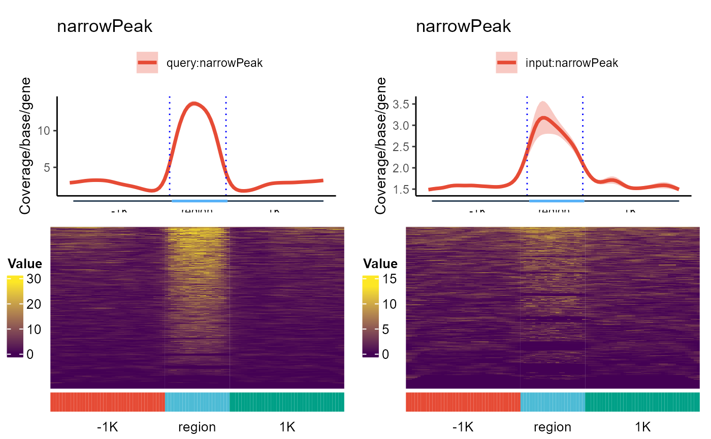
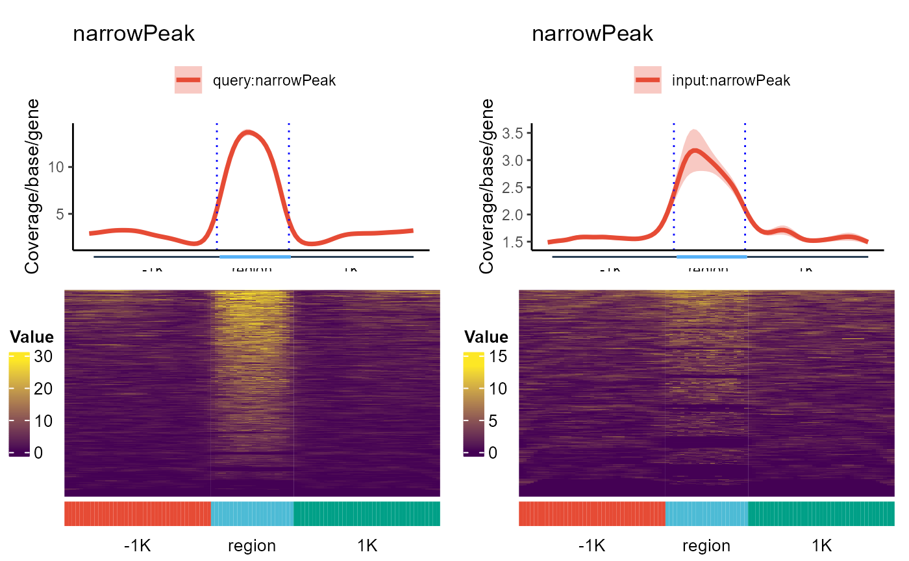

Plot reads or peak Coverage/base/gene of samples given in the query files inside regions defined in the centerFiles. The upstream and downstream flanking windows can be given separately. If Input files are provided, ratio over Input is computed and displayed as well.
plot_region(
queryFiles,
centerFiles,
txdb = NULL,
regionName = "region",
inputFiles = NULL,
nbins = 100,
importParams = NULL,
verbose = FALSE,
scale = FALSE,
heatmap = FALSE,
fiveP = -1000,
threeP = 1000,
smooth = FALSE,
stranded = TRUE,
transform = NA,
outPrefix = NULL,
rmOutlier = 0,
heatRange = NULL,
Ylab = "Coverage/base/gene",
statsMethod = "wilcox.test",
hw = c(8, 8),
nc = 2
)Arguments
- queryFiles
a named vector of sample file names. The file should be in .bam, .bed, .wig or .bw format, mixture of formats is allowed
- centerFiles
a named vector of reference file names or genomic features in c("utr3", "utr5", "cds", "intron", "exon", "transcript", "gene"). The file should be in .bed format only
- txdb
a TxDb object defined in the GenomicFeatures package. Default NULL, needed only when genomic features are used in the place of centerFiles.
- regionName
a string specifying the name of the center region in the plots
- inputFiles
a named vector of input sample file names. The file should be in .bam, .bed, .wig or .bw format, mixture of formats is allowed
- nbins
an integer defines the total number of bins
- importParams
a list of parameters for
handle_input- verbose
logical, indicating whether to output additional information (data used for plotting or statistical test results)
- scale
logical, indicating whether the score matrix should be scaled to the range 0:1, so that samples with different baseline can be compared
- heatmap
logical, indicating whether a heatmap of the score matrix should be generated
- fiveP
an integer, indicating extension out or inside of the 5' boundary of gene by negative or positive number
- threeP
an integer, indicating extension out or inside of the 5' boundary of gene by positive or negative number
- smooth
logical, indicating whether the line should smoothed with a spline smoothing algorithm
- stranded
logical, indicating whether the strand of the feature should be considered
- transform
a string in c("log", "log2", "log10"), default = NA indicating no transformation of data matrix
- outPrefix
a string specifying output file prefix for plots (outPrefix.pdf)
- rmOutlier
a numeric value serving as a multiplier of the MAD in Hampel filter for outliers identification, 0 indicating not removing outliers. For Gaussian distribution, use 3, adjust based on data distribution
- heatRange
a numerical vector of two elements, defining range for heatmap color ramp generation
- Ylab
a string for y-axis label
- statsMethod
a string in c("wilcox.test", "t.test"), for pair-wise group comparisons
- hw
a vector of two elements specifying the height and width of the output figures
- nc
integer, number of cores for parallel processing
Value
a dataframe containing the data used for plotting
Examples
txdb <- AnnotationDbi::loadDb(system.file("extdata", "txdb_chr19.sql", package = "GenomicPlot"))
queryfiles <- system.file("extdata", "chip_treat_chr19.bam", package = "GenomicPlot")
names(queryfiles) <- "query"
inputfiles <- system.file("extdata", "chip_input_chr19.bam", package = "GenomicPlot")
names(inputfiles) <- "input"
centerfiles <- system.file("extdata", "test_chip_peak_chr19.narrowPeak", package = "GenomicPlot")
names(centerfiles) <- "narrowPeak"
op <- NULL
importParams <- list(
offset = 0, fix_width = 150, fix_point = "start", norm = TRUE,
useScore = FALSE, outRle = TRUE, useSizeFactor = TRUE, genome = "hg19"
)
plot_region(
queryFiles = queryfiles, centerFiles = centerfiles, txdb = NULL, regionName = "region",
inputFiles = inputfiles, nbins = 100, importParams = importParams, verbose = TRUE,
scale = FALSE, heatmap = TRUE, fiveP = -1000, threeP = 1000, smooth = TRUE, stranded = TRUE, transform = "log2",
outPrefix = NULL, rmOutlier = 0, heatRange = NULL, Ylab = "Coverage/base/gene",
statsMethod = "wilcox.test", nc = 2
)
#> Reading bamfile: C:/Users/greenblatt/AppData/Local/Temp/RtmpiQE4hr/temp_libpath167c637a5c73/GenomicPlot/extdata/chip_treat_chr19.bam
#> Paired end bam file detected!
#>
#> Bam file C:/Users/greenblatt/AppData/Local/Temp/RtmpiQE4hr/temp_libpath167c637a5c73/GenomicPlot/extdata/chip_treat_chr19.bam is loaded
#> Cached .rds file is modified using new input parameters
#> Reading bamfile: C:/Users/greenblatt/AppData/Local/Temp/RtmpiQE4hr/temp_libpath167c637a5c73/GenomicPlot/extdata/chip_input_chr19.bam
#> Paired end bam file detected!
#>
#> Bam file C:/Users/greenblatt/AppData/Local/Temp/RtmpiQE4hr/temp_libpath167c637a5c73/GenomicPlot/extdata/chip_input_chr19.bam is loaded
#> Cached .rds file is modified using new input parameters
#> Reading bedfile: C:/Users/greenblatt/AppData/Local/Temp/RtmpiQE4hr/temp_libpath167c637a5c73/GenomicPlot/extdata/test_chip_peak_chr19.narrowPeak
#> The input file C:/Users/greenblatt/AppData/Local/Temp/RtmpiQE4hr/temp_libpath167c637a5c73/GenomicPlot/extdata/test_chip_peak_chr19.narrowPeak have more than 6 columns, only the first 6 columns will be used!
#> Cached .rds file is modified using new input parameters
#> Computing coverage for sample...
#> Query label: query
#> Center label: narrowPeak
#> Feature name: -1K
#> Feature name: region
#> Feature name: 1K
#> Query label: input
#> Center label: narrowPeak
#> Feature name: -1K
#> Feature name: region
#> Feature name: 1K
#> Plotting coverage profiles...
#> Query label: query
#> Center label: narrowPeak
#> Inspecting matrix
#> n_invalid fraction_invalid
#> infinite 0 0.0000000
#> NA 0 0.0000000
#> NaN 0 0.0000000
#> zero 559199 0.7038376
#> Imputing missing values...
#> Matrix quartiles:
#> 0 0 0 7.0281865421272 2030.69409868277
#>
#> Matrix quantiles after imputing:
#> 0.0277274801288241 0.0277274801288241 0.0277274801288241 7.0281865421272 2030.69409868277
#> The imputed value is: 0.0277274801288241
#> Feature name: -1K
#> Feature name: region
#> Feature name: 1K
#> Drawing heatmap
#> quantile(fullMatrix, c(seq(0.9, 1, 0.005)), na.rm=TRUE)
#> 9.91978329088811 11.4459037971786 12.9720243034691 14.4008920323979 15.7748033102141 17.3268859257092 18.9091685538184 19.076506328631 19.076506328631 19.076506328631 19.076506328631 19.076506328631 22.0113534561127 25.24513550115 28.6147594929465 28.6147594929465 34.7290243418666 39.6204362210028 48.9220081653601 71.894583226028 2030.69409868277
#> `use_raster` is automatically set to TRUE for a matrix with more than
#> 2000 rows. You can control `use_raster` argument by explicitly setting
#> TRUE/FALSE to it.
#>
#> Set `ht_opt$message = FALSE` to turn off this message.
#> Warning: implicit list embedding of S4 objects is deprecated
#> Query label: input
#> Center label: narrowPeak
#> Inspecting matrix
#> n_invalid fraction_invalid
#> infinite 0 0.0000000
#> NA 0 0.0000000
#> NaN 0 0.0000000
#> zero 617165 0.7767967
#> Imputing missing values...
#> Matrix quartiles:
#> 0 0 0 0 2381.26891525185
#>
#> Matrix quantiles after imputing:
#> 0.0210222020521201 0.0210222020521201 0.0210222020521201 0.0210222020521201 2381.26891525185
#> The imputed value is: 0.0210222020521201
#> Feature name: -1K
#> Feature name: region
#> Feature name: 1K
#> Drawing heatmap
#> quantile(fullMatrix, c(seq(0.9, 1, 0.005)), na.rm=TRUE)
#> 7.82025916338868 7.82025916338868 7.82025916338868 7.82025916338868 7.82025916338868 7.82025916338868 7.82025916338868 7.82025916338868 7.82025916338868 7.82025916338868 7.82025916338868 7.82025916338868 7.82025916338868 8.78064186766448 11.0285706150353 13.4508457610285 15.6405183267774 15.6405183267774 15.6405183267774 18.0760065819617 2381.26891525185
#> `use_raster` is automatically set to TRUE for a matrix with more than
#> 2000 rows. You can control `use_raster` argument by explicitly setting
#> TRUE/FALSE to it.
#>
#> Set `ht_opt$message = FALSE` to turn off this message.
#> Warning: implicit list embedding of S4 objects is deprecated
#> Beds: query
#> Centers: narrowPeak
#> Beds: input
#> Centers: narrowPeak
#> Beds: query input
#> Centers: narrowPeak


 #> Max(IP) min(Input) pseudo
#> 2030.6940987 0.0210222 1.0000000
#> Inspecting matrix
#> n_invalid fraction_invalid
#> infinite 0 0
#> NA 0 0
#> NaN 0 0
#> zero 0 0
#> Imputing missing values...
#> Matrix quartiles:
#> 0.025628286048916 1.00656722063754 1.00656722063754 1.31911487027852 458.121619806466
#>
#> Matrix quantiles after imputing:
#> 0.025628286048916 1.00656722063754 1.00656722063754 1.31911487027852 458.121619806466
#> The imputed value is: 0.012814143024458
#> Plotting coverage profiles...
#> Ratio label: query
#> Center label: narrowPeak
#> Feature name: -1K
#> Feature name: region
#> Feature name: 1K
#> Drawing heatmap
#> quantile(fullMatrix, c(seq(0.9, 1, 0.005)), na.rm=TRUE)
#> 3.36754960066551 3.36754960066551 3.36754960066551 3.36754960066551 3.36754960066551 3.36754960066551 3.36754960066551 3.36754960066551 3.60758485684757 3.82577283303868 4.02236889314674 4.20301015811094 4.29742209340991 4.29742209340991 4.29742209340991 4.323546345804 4.63697971277802 4.85823022681547 5.13694783145658 5.57557686371549 8.83958683831407
#> `use_raster` is automatically set to TRUE for a matrix with more than
#> 2000 rows. You can control `use_raster` argument by explicitly setting
#> TRUE/FALSE to it.
#>
#> Set `ht_opt$message = FALSE` to turn off this message.
#> Warning: implicit list embedding of S4 objects is deprecated
#> Beds: query
#> Centers: narrowPeak

#> Max(IP) min(Input) pseudo
#> 2030.6940987 0.0210222 1.0000000
#> Inspecting matrix
#> n_invalid fraction_invalid
#> infinite 0 0
#> NA 0 0
#> NaN 0 0
#> zero 0 0
#> Imputing missing values...
#> Matrix quartiles:
#> 0.025628286048916 1.00656722063754 1.00656722063754 1.31911487027852 458.121619806466
#>
#> Matrix quantiles after imputing:
#> 0.025628286048916 1.00656722063754 1.00656722063754 1.31911487027852 458.121619806466
#> The imputed value is: 0.012814143024458
#> Plotting coverage profiles...
#> Ratio label: query
#> Center label: narrowPeak
#> Feature name: -1K
#> Feature name: region
#> Feature name: 1K
#> Drawing heatmap
#> quantile(fullMatrix, c(seq(0.9, 1, 0.005)), na.rm=TRUE)
#> 3.36754960066551 3.36754960066551 3.36754960066551 3.36754960066551 3.36754960066551 3.36754960066551 3.36754960066551 3.36754960066551 3.60758485684757 3.82577283303868 4.02236889314674 4.20301015811094 4.29742209340991 4.29742209340991 4.29742209340991 4.323546345804 4.63697971277802 4.85823022681547 5.13694783145658 5.57557686371549 8.83958683831407
#> `use_raster` is automatically set to TRUE for a matrix with more than
#> 2000 rows. You can control `use_raster` argument by explicitly setting
#> TRUE/FALSE to it.
#>
#> Set `ht_opt$message = FALSE` to turn off this message.
#> Warning: implicit list embedding of S4 objects is deprecated
#> Beds: query
#> Centers: narrowPeak
